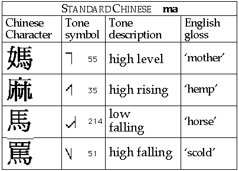

The IPA system of tone letters used above represents 5 levels within the speaker’s pitch range, numbered 1 to 5, with 5 being the highest. The analysis shown gives a traditional description of the Chinese tones as said on these words, spoken in isolation. The first tone is said to have the values 55, the second is said to be 35, the third 214, and the fourth 51. If you are using sciconWeb or theWebPlayer or any other system that gives a graphical display of the pitch while you are listening to sounds on the web, you will see that it would be more accurate for this speaker on this occasion to say that the first tone is 44, the second 24, the third 212, and the fourth 52. Further comment